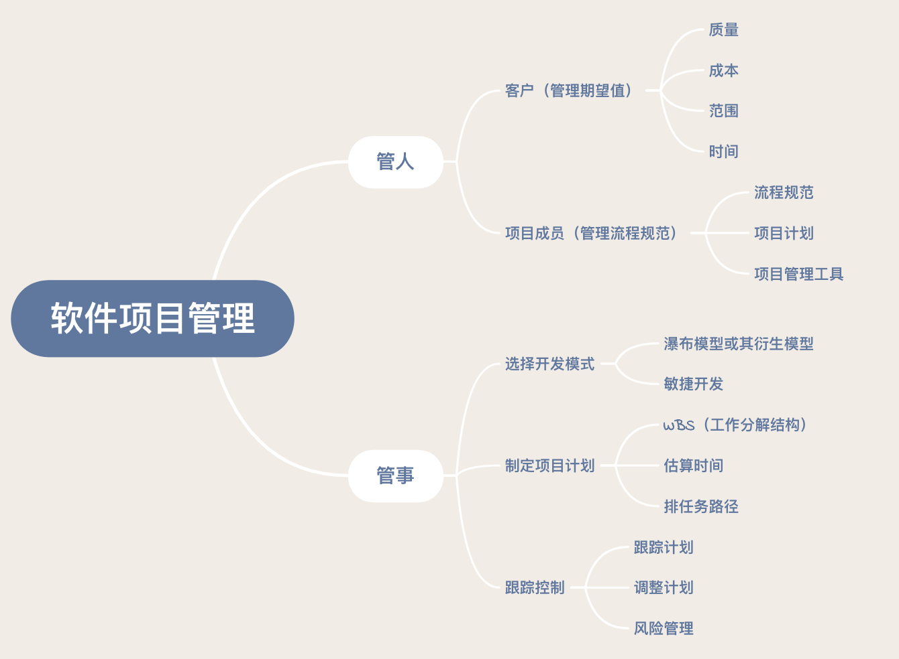

- 00 开篇词 你为什么应该学好软件工程？.md.html
- 01 到底应该怎样理解软件工程？.md.html
- 02 工程思维：把每件事都当作一个项目来推进.md.html
- 03 瀑布模型：像工厂流水线一样把软件开发分层化.md.html
- 04 瀑布模型之外，还有哪些开发模型？.md.html
- 05 敏捷开发到底是想解决什么问题？.md.html
- 06 大厂都在用哪些敏捷方法？（上）.md.html
- 07 大厂都在用哪些敏捷方法？（下）.md.html
- 08 怎样平衡软件质量与时间成本范围的关系？.md.html
- 09 为什么软件工程项目普遍不重视可行性分析？.md.html
- 10 如果你想技术转管理，先来试试管好一个项目.md.html
- 11 项目计划：代码未动，计划先行.md.html
- 12 流程和规范：红绿灯不是约束，而是用来提高效率.md.html
- 13 白天开会，加班写代码的节奏怎么破？.md.html
- 14 项目管理工具：一切管理问题，都应思考能否通过工具解决.md.html
- 15 风险管理：不能盲目乐观，凡事都应该有B计划.md.html
- 16 怎样才能写好项目文档？.md.html
- 17 需求分析到底要分析什么？怎么分析？.md.html
- 18 原型设计：如何用最小的代价完成产品特性？.md.html
- 19 作为程序员，你应该有产品意识.md.html
- 20 如何应对让人头疼的需求变更问题？.md.html
- 21 架构设计：普通程序员也能实现复杂系统？.md.html
- 22 如何为项目做好技术选型？.md.html
- 23 架构师：不想当架构师的程序员不是好程序员.md.html
- 24 技术债务：是继续修修补补凑合着用，还是推翻重来？.md.html
- 25 有哪些方法可以提高开发效率？.md.html
- 26 持续交付：如何做到随时发布新版本到生产环境？.md.html
- 27 软件工程师的核心竞争力是什么？（上）.md.html
- 28 软件工程师的核心竞争力是什么？（下）.md.html
- 29 自动化测试：如何把Bug杀死在摇篮里？.md.html
- 30 用好源代码管理工具，让你的协作更高效.md.html
- 31 软件测试要为产品质量负责吗？.md.html
- 32 软件测试：什么样的公司需要专职测试？.md.html
- 33 测试工具：为什么不应该通过QQ微信邮件报Bug？.md.html
- 34 账号密码泄露成灾，应该怎样预防？.md.html
- 35 版本发布：软件上线只是新的开始.md.html
- 36 DevOps工程师到底要做什么事情？.md.html
- 37 遇到线上故障，你和高手的差距在哪里？.md.html
- 38 日志管理：如何借助工具快速发现和定位产品问题 ？.md.html
- 39 项目总结：做好项目复盘，把经验变成能力.md.html
- 40 最佳实践：小团队如何应用软件工程？.md.html
- 41 为什么程序员的业余项目大多都死了？.md.html
- 42 反面案例：盘点那些失败的软件项目.md.html
- 43 以VS Code为例，看大型开源项目是如何应用软件工程的？.md.html
- 44 微软、谷歌、阿里巴巴等大厂是怎样应用软件工程的？.md.html
- 45 从软件工程的角度看微服务、云计算、人工智能这些新技术.md.html
- 一问一答第1期 30个软件开发常见问题解决策略.md.html
- 一问一答第2期 30个软件开发常见问题解决策略.md.html
- 一问一答第3期 18个软件开发常见问题解决策略.md.html
- 一问一答第4期 14个软件开发常见问题解决策略.md.html
- 一问一答第5期 22个软件开发常见问题解决策略.md.html
- 学习攻略 怎样学好软件工程？.md.html
- 特别放送 从软件工程的角度解读任正非的新年公开信.md.html
- 结束语 万事皆项目，软件工程无处不在.md.html
- 捐赠
10 如果你想技术转管理，先来试试管好一个项目
你好，我是宝玉，我今天与你分享的主题是：如果你想技术转管理，先来试试管好一个项目。
技术转管理，是很多技术人员的梦想，所以经常有人问我，怎么样才能转型管理？
项目管理，是最基础的管理，既要管理一个项目，又要协调整个团队一起，完成共同的目标。
我的管理转型就是从项目管理开始的，在从技术转型项目管理的过程中，让我从以前专注于局部技术实现，逐步转向关注项目整体；从个人的单打独斗，到借助整个团队的力量一起完成一个项目。
一直到后来做开发总监要去管理整个开发部门，发现还是一样绕不开要管理项目，只是从直接管项目变成了间接管项目而已。
所以我一般会建议：如果你想技术转管理，先试试管好一个项目。项目管理通常是技术人员转型管理的第一步，也是非常关键的一步！
技术人员转型管理的障碍是什么？
很多人认为技术人员是不适合做管理的，包括网上也有很多对程序员的刻板印象，比如说：极客、木纳、不善交际、头发少、穿格子衫……
而我了解的程序员却不是这样子的，他们都很聪明，学习能力强，而情商这些其实和其他职业群体是没有区别的。
那么为什么程序员会给人这种刻板印象呢？
一方面原因是这个群体勇于自黑，不介意这些印象；另一方面则是他们过于专注技术实现，沉浸于细节中，而忽视了其他事情。
程序员总是想着如何技术实现、用什么语言框架、怎么提高效率……要钻研技术，这些是非常好的优点，但是要转管理，这反而会是一种障碍。
因为管理，最重要的一点就是大局观，要能从整个项目的角度，从整个团队的角度去思考，去确定方向，去发现问题，对问题及时解决及时调整。
但是当你把注意力都放在技术细节上，就容易忽视其他事情，例如和其他人之间的沟通、不关心当前项目进展。
就像有人说的：
关注细节的，是工程师；
关注过程的，是项目经理；
关注结果的，是老板。
所以，如果你要技术转管理，可以先从管好一个项目开始。这也是为什么我在专栏一开始，就建议你要逐步转变思维，从技术思维到工程思维，不要仅仅局限于自己负责的那一个小模块，而是要多从项目的整体去思考。
怎么样去管理一个软件项目？
软件项目管理涉及知识不少，既有传统的项目管理知识，又需要掌握软件工程的知识，所以很多人一谈到项目管理就觉得很难很复杂。
我在专栏中一直强调“道、术、器”，对于很多知识，如果我们能总结出其中的“道”，再去看很多问题，其实就没那么复杂了。
就软件项目管理来说，“道”就是管好人、管好事。如果从这两个维度去看如何管理项目，就会发现其实并不难，有很多“术”可以为我们所用。
怎样管好软件项目中的人？
软件项目管理的一个维度是管人。项目管理中的人，主要涉及两类：客户和项目成员。
- 管理好客户的预期
客户，就是会使用你软件产品的人，通常也是给你项目出钱的人。
对于客户的管理，就是对于客户期望值的管理，如果你项目的结果高于客户的期望，那么就可以说你的项目就是成功的，如果没有达到客户的期望，可能就是不成功的。
想要满足客户预期，通常来说，就是你能在项目的质量、范围、时间和成本上达到要求。
质量达标：交付产品是高质量的，满足客户需求的。
完整交付：按照约定的功能范围交付最终产品。
按时交付：项目按照客户认可的进度完成。
预算之内：在预算内完成项目。
这四个要素，并不是说必须都要满足，其实很多时候是可以协商的，重点是要达到一个平衡，怎么达到平衡？具体你可以参考《08 怎样平衡软件质量与时间成本范围的关系？》，我已经在这篇文章中进行了详细的解答。
- 用流程和规范让项目成员一起紧密协作
项目成员，也就是帮助你一起完成项目的人。
对于项目成员的管理，不需要过多依赖人的管理，否则项目经理就会成为项目管理的瓶颈。所以更多要落实到流程和工具上。
好的项目管理，不需要直接去管人，而是管理好流程规范；项目成员不需要按照项目经理的指令做事，而是遵循流程规范。
合适的项目管理工具，也可以简化流程，保障流程的执行，提高效率。
关于具体怎样制定流程规范，我会后续更新的文章《12 流程和规范：红绿灯不是约束，而是用来提高效率》中有更多介绍。
关于项目管理的工具，也会在《14 项目管理工具：一切管理问题，都应思考能否通过工具解决》中有详细介绍。另外，你也可以先参考我在《06 大厂都是如何应用敏捷开发的？（上）》中提到的部分案例。
怎样管好软件项目中的事？
软件项目管理的另一个维度就是管事。软件项目中的事，是指要完成项目目标，在整个开发过程中所产生的一系列任务。对项目中事情的管理，本质上就是对软件开发过程的管理。
- 选择适合项目的开发模式
软件项目的过程管理，和其他工程项目完全不一样，有其独特性，好在软件工程对这些过程的开发模式都已经有了很好的总结，我们直接借用就可以了。
选择好开发模式，才好确定后续的一系列问题，例如流程规范、使用什么工具，如何制定项目计划等。
所以对软件项目过程的管理，首先就是要根据项目特点选取合适的开发模式，是敏捷开发还是瀑布模型或者瀑布模型的衍生模型？是一步到位还是逐步迭代？
对于开发模式的选择，可以参考《03 | 瀑布模型：像工厂流水线一样把软件开发分层化》《04 | 瀑布模型之外，还有哪些开发模型？》和《05 | 敏捷开发到底是想解决什么问题？》的内容。
当然，开发模式选好了后，还需要配套的流程规范，以及合适的工具，以保障开发模式的执行。
- 制定好项目计划
凡事预则立不预则废，在选择好开发模式后，紧接着就是要做好项目计划，有了项目计划，才能有计划有目的地去推动项目进展，出现问题也能及时发现、及时调整。
对于如何制定计划，我将在下一篇更新的文章《11 | 项目计划：代码未动，计划先行》中进行详细讲解。
- 对计划进行跟踪和控制，同时做好风险管理
计划制定后，并不是说事情就会完全按照我们设想的进行，实际执行难免会和计划有些出入，所以还需要对计划进行跟踪和控制。当项目的推进过程中，如果计划有出入时，需要分析原因，对计划做出调整。
同时，也不能盲目乐观，对于项目过程中可能存在的风险要进行识别，做好 B 计划，这样一旦风险发生变成问题，可以及时应对，减少风险导致的损失。有关风险管理的内容，可以参考《15 | 风险管理：不能盲目乐观，凡事都应该有 B 计划》。
管好人、管好事，你就能管好软件项目。除了上面介绍的一些项目管理知识，涉及软件项目管理的知识内容还有很多。这里并不是说其他知识内容不重要，而是在刚开始的时候，先把这些事情做好，可以保证项目管理不会出现大的偏差，然后逐步拓展到其他知识领域。
在这里，我把前面说的内容做了个简单的思维导图，希望可以对你的项目管理转型起到一定的帮助作用。

技术转管理的一些经验教训分享
技术转管理的路上肯定不会是一帆风顺的，要自己踩过很多坑才能成长，我这里也给你分享一点经验教训，希望能帮助你少走一点弯路。
- 控制你想写代码的冲动
我给每一个刚从技术转型管理的同学的第一个建议都是一样的，那就是：“不要写代码，不要写代码，不要写代码，控制你想自己动手写代码的冲动。”
前面我说过技术人员转型管理的最大障碍是什么，那就是过于关注技术，而忽略了其他事情。从技术转型管理，是个巨大的转变，这种思维的转变是很难一蹴而就的。
对于程序员来说，写代码是自己的“舒适区”，而管理则是“学习区”或“恐慌区”，在转型的过程中，特别容易回到舒适区。
比如你看某个接手你的程序员代码写的实在是不够好，那是你最熟悉的，你只要一小时就写完了，而他要一整天的时间，还没有你写的质量好，你会很有冲动去帮他完成。
比如说在项目进度吃紧的时候，你可能第一想法就是自己去写代码帮助团队赶上进度。
但是，你要知道，当你转型管理后，你的主要职责就是管理，而不是写程序。如果你还是把大部分时间用在写程序上，那么你就很容易忽略项目中的问题。比如没有去关注项目的进展、目前项目的瓶颈、和客户以及其他项目组之间的沟通协调等。
这就是为什么你第一步是要控制自己写代码的冲动。作为一个项目管理者，你的第一要务是管理好项目，而不是去写代码。当你控制住不去写代码以后，你才能把注意力放到团队和项目上去，去领导团队。团队出现问题时，你能及时解决、及时调整。
所以，如果你带的项目进度吃紧时，你要做的不是去写代码，而是去帮助团队从其他角度想办法。具体怎么做，你可以参考我在《08 怎样平衡软件质量与时间成本范围的关系？》这篇文章里介绍的一些方法，看是不是可以用这些办法缓解进度压力。
- 团队的成功，才是你的成功
我刚转型做管理的时候，问过老板一个问题：“是不是我把上级的工作做了，我就能升职了？”老板的回答很出乎我意料：“并不是你把上级的工作做了就能升职，而是你的下级都成长了，能替代你的位置了，你就可以升职了。”
这让我明白一个道理：作为一个管理者，团队的成功，才是你的成功。做程序员的时候，把代码写好就很成功了，但是转型做管理后，团队的成功和项目的成功，才是你的成功。
- 形成自己的管理风格
我在刚开始工作的时候，当时的项目经理很厉害，对我们要求非常严厉，做错了可能就要挨批评，项目管理的很好。那段时间我也进步很大，所以我觉得他是一个很好的项目经理，我就想着自己以后也要像他一样去管理项目。
等到我开始管理项目时，我也想像他一样去严厉的对待下属，但我的性格是比较温和的，我没有办法去做到动不动就去责骂、批评下属，这也让我有了很大的困惑。
后来我尝试着结合自己的性格特点，更多地去激励、帮助下属。在这种管理风格下，整个团队的氛围很融洽，大家做事情也积极主动，一样达到了很好的管理目标。
所以说管理这种事，并不是只有一种风格一种方法，你完全可以根据自己的特点，找到适合自己的管理风格。
- 坚持就是胜利
技术转型管理的过程，一定不会是一帆风顺的，你会面临很多挑战，会有非常大的压力。这时候最容易产生的冲动行为就是：“算了，还是回去写程序吧！”
我在转型的过程中也遭遇过非常大的压力，遇到过各种困难，掉了好多头发。我有过好多次想放弃的念头，最终还是咬咬牙，坚持了下来。
这样过了几年后，我再回头看当初觉得特别难、压力特别大的事情，现在看起来根本不算什么。如果我当初真的放弃了，恐怕再难迈过那道坎，完成转型。
一旦你已经下定决心要转型，就不要轻言放弃，坚持就是胜利。
总结
想要技术转型管理，首先从转变思维方式开始，从技术思维到管理思维，从关注细节到关注整体。然后去改变习惯，控制自己想写代码的冲动，多去从其他角度想办法。
要管理好一个项目，关键是要管理好项目中的人和事。对客户要管理好期望，对项目成员则通过合理的流程规范更好的一起协作；对于项目中事的管理就是对软件开发过程的管理，选择好开发模型很重要，然后就是制定好计划，按照计划推进，过程中不断的调整，并且管理好项目中的风险。
© 2019 - 2023 Liangliang Lee. Powered by gin and hexo-theme-book.